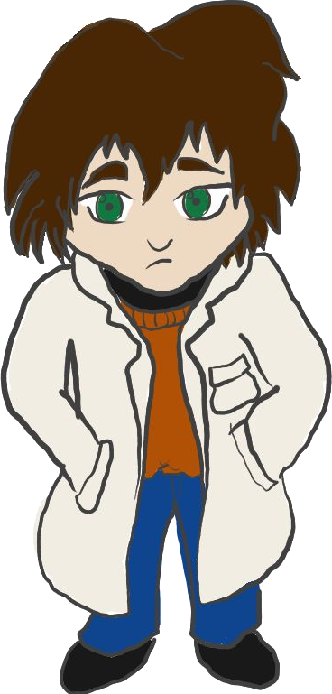

Hands-on (Shoes-off) Probability
Setting the Stage
Suppose you are a forensic examiner.

You’ve been given a crime-scene print as well as a suspect’s shoe, which you have used to make a print comparable to the one found at the crime scene. The images are shown in Figure 1.
![A black-and-white print of a shoe with a pattern of gridded X's dominating. Across the ball of the foot, there is a series of curved stripes, with a set of concentric circles on the inside of the ball of the foot within the stripes. There is an oval with some sort of brand logo at the arch, and the heel has quadrilateral blocks filled with zig-zag patterns. There are four arches cutting through the heel in the opposite direction as the arches at the ball, forming what appears to be a set of concentric circles intersecting the whole shoe.](../image/suspect_90.png)
Compare the features of the lab-made print and the crime-scene print.
Do they look similar?
Are there any differences?
You’ve determined that the two prints form a class characteristic match - they have sufficiently similar features that the suspect might have left the print at the crime scene, but it could also have been any other person wearing the same model of shoe. You are writing up your report, and you expect you will have to testify in court about whether the suspect did or did not commit the crime. To do this, you need some sort of way to determine how likely it is that a random person off the street is to have the same shoe as the one that left the print at the scene.
Consider for a moment what you would say if the print and the suspect’s shoe had been of a different model, like the Converse Chuck Taylor All-Star shown in Figure 2.
These shoes were first introduced in the 1960s and have had a relatively consistent design for 60 years. In addition, many different models of Converse shoes (and several knock-off brands) feature a similar sole pattern, which means it is not possible to determine what model of Converse made a specific print.
Then, think about what you would say if the print and the suspect’s shoe had been from a shoe with a relatively uncommon pattern, such as the shoe sole shown in Figure 3.
If your crime scene print had been from a Converse shoe, does that mean the suspect is more or less likely to be guilty than if the crime scene print had been from a El Naturalista Nido boot like the sole in Figure 3?
Daydreaming over, you start back to your report writing. How do you characterize the types of shoes people wear in the population? What makes a shoe common or uncommon?
Data Collection Activity
Note: This activity is based off of the Sole Searching citizen science activity published by the Leverhulme Research Centre for Forensic Science in the UK. It has been modified to use US products and paper sizes.
Materials
- Cooking Spray
- Chocolate Milk powder
Note: Cocoa powder used for baking is not ideal for this project. You want something designed to stir into milk. - White printer paper of a size appropriate to your participants’ feet.
- 8.5” x 14” paper will accommodate most feet. Here is a template that you can use that includes a forensics ruler (Do not scale if you want the measurements to be accurate).
- If you have a lot of tall men in your sample population, you may need to combine multiple sheets or use 11” x 17” paper.
- 2 towels, puppy pads, or rolls of paper towels
- A cookie sheet large enough to hold your sheet of paper
- 1-2 spoons
- tape (optional - to hang the prints up on the wall)
- A pan filled with about 1” of soapy water (optional - good if doing this indoors)
Directions
Take off one shoe, hold it sole up, and (lightly) apply cooking spray to the sole.
Set the shoe on the towel or pad and put it back on. Step/hop on the shoe once or twice to remove excess oil.
Step (with your oiled shoe) onto the first sheet of paper, rolling heel-to-toe.
Step (with your oiled shoe) onto the second sheet of paper, rolling heel-to-toe.
Step into the pan of soapy water with the shoe that you oiled, then step onto the towel to dry your shoe off.
Lightly sprinkle about 1/4 tsp of chocolate milk powder onto each sheet of paper. Shake the sheet of paper to spread the powder around so that it adheres to the oil.
Use the feature guide to identify different geometric features on your shoe print.
Compare with other shoe prints - do any have similar features in similar locations?
Note: This step may only work in groups of about 30 or more.
The Random Match Probability of a shoe is the number of similar prints divided by the total number of prints. \[\hat P_\text{Random Match} = \frac{\# \text{ similar prints}}{\text{Total # prints}}\]
If our sample is large enough and representative of the larger population, then our estimated random match probability might be close enough to the hypothetical random match probability in the population
Discussion: Calculating Random Match Probabilities in Real Life
Our forensic examiner is a bit stuck - there is no way, currently, to easily collect a good sample of the shoes members of the population wear on a daily basis. Instead, forensic examiners typically rely on their experience. This is less than ideal, because an examiner’s experience of what is a common shoe and what is less common is subjective, and is not easily reproduced from examiner to examiner.
What are some ways an examiner’s experience might be a biased sample?
Statisticians who work on problems in forensic science try to identify ways to create objective, quantitative tools to assist examiners. This requires some creative thinking, work with engineers, and talking with examiners to determine what they would be able to use in practice.
Can you think of ways to collect shoe print data for statistical sampling?
One interesting and un-settled aspect of forensic statistics is that of the comparison population. Suppose I collected shoe prints from 100 people outside of a corporate office building, and also collected shoe prints from 100 people outside of the local university student union. Do you think the two samples will have similar shoes?
When we consider populations in forensics, it is often of interest to distinguish between the general public and the population of people who are in some way connected to the crime or criminal investigation - suspects, members of the community near the crime, people who walked through the crime scene before evidence was collected.
Which population do you think is most appropriate for using to compute the random match probability? Why?